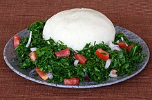

Ugali Recipe

Description
Ugali is like a porridge but much more dense made from white maize meal or maize flour. It is
the staple diet of the indigenous people of East Africa. Also known as Nsima it is generally
enjoyed with a vegetable and/or meat stew. People at the coast and around Lake Victoria enjoy
it with fish.
Ugali is also served with nyama choma which is grilled meat and kachumbari, a tomato onion
salad. One of the most easiest dish to prepare, it is not only rich in fiber but also is a
good source of carbohydrates, minerals and Vitamin B. And it is gluten free and vegan friendly.
ingredients
- Maize meal or corn meal - white variety
- Water - normal tap water
Steps
- Heat water over medium heat in a deep pan. Make sure you take a pan with a handle.
- Sprinkle about 1 tbsp of the maize meal while the water comes to a boil.
- Add the maize meal or cornmeal and keep on stirring with a strong wooden spoon.
- Keep stirring and pressing the mixture against the sides of the pan to break up the lumps.
- As the mixture becomes thicker, it becomes more difficult to mix but keep mixing and
breaking up the lumps.
- The mixture with begin to come away from the sides of the pan.
- Allow it to cook for 2-3 minutes.
- At this point either transfer the ugali to a platter from the pan. Place the plate over the
pan and turn it upside down.
- Or you can transfer to a small heatproof bowl. Pat it down into shape. Place a plate over
the bowl and turn it over.
- Enjoy piping hot ugali with your favourite stew (or beef stew or curry.